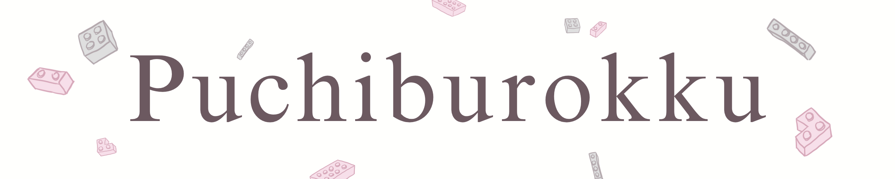
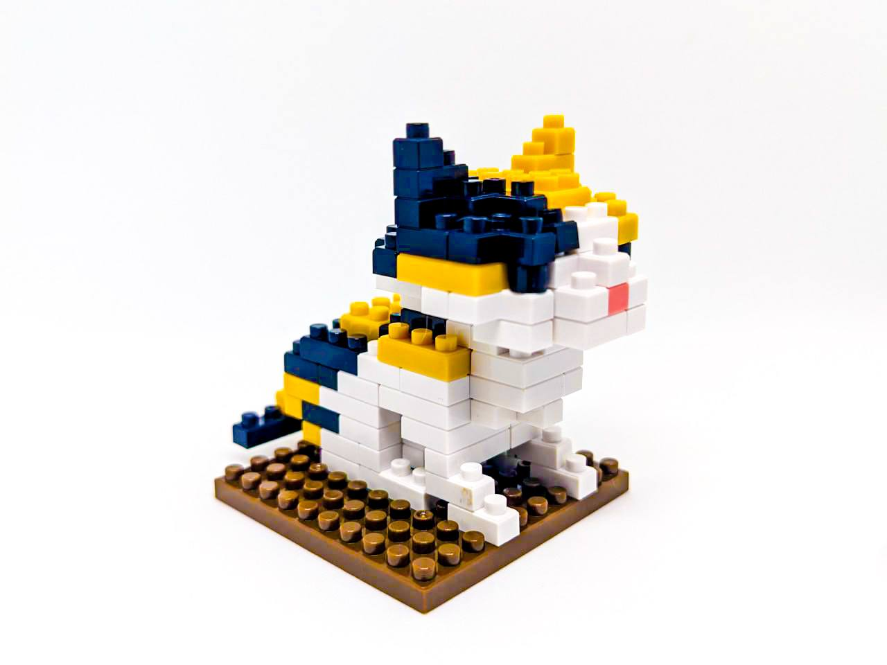
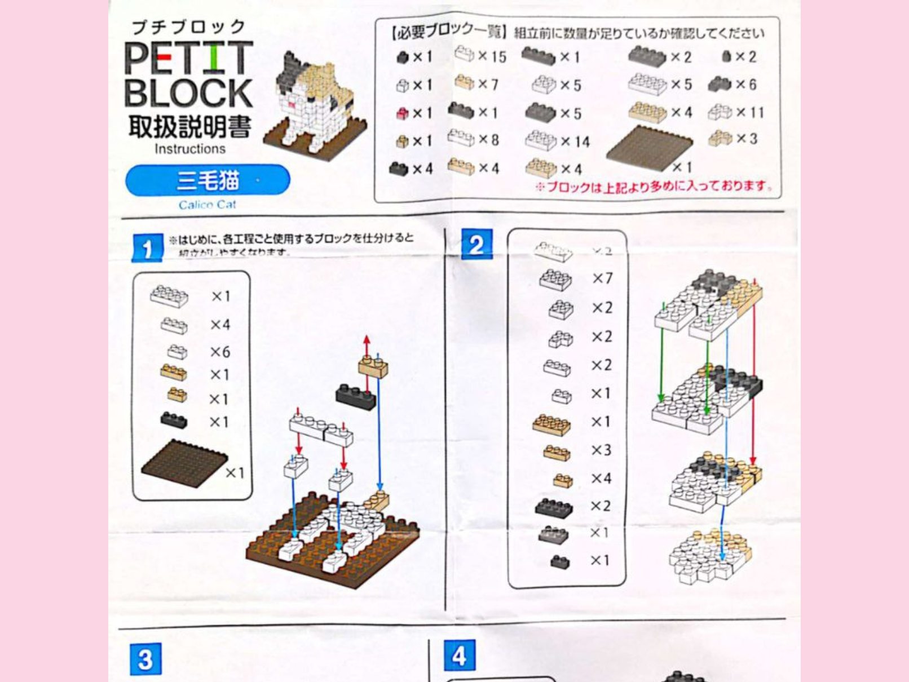
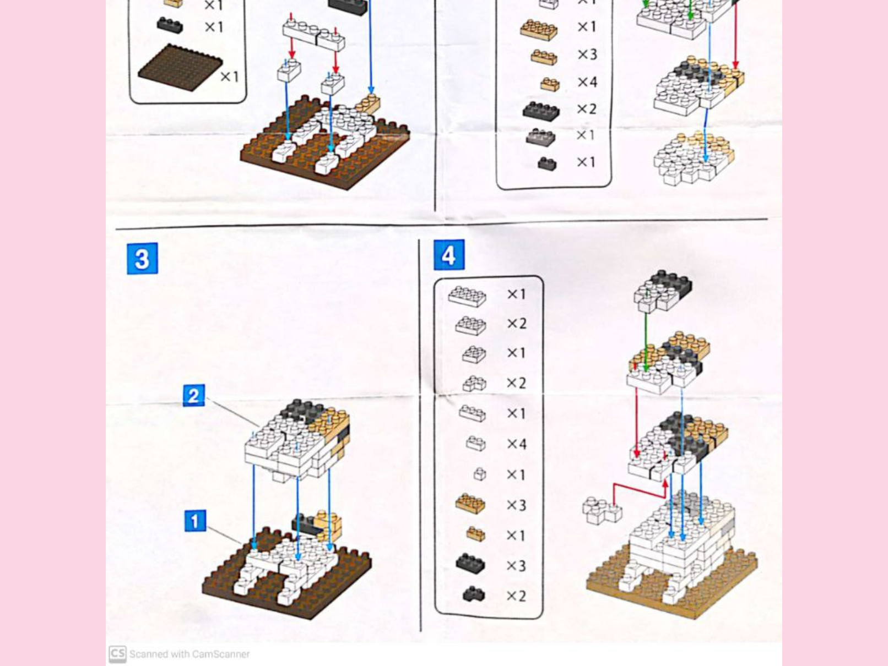
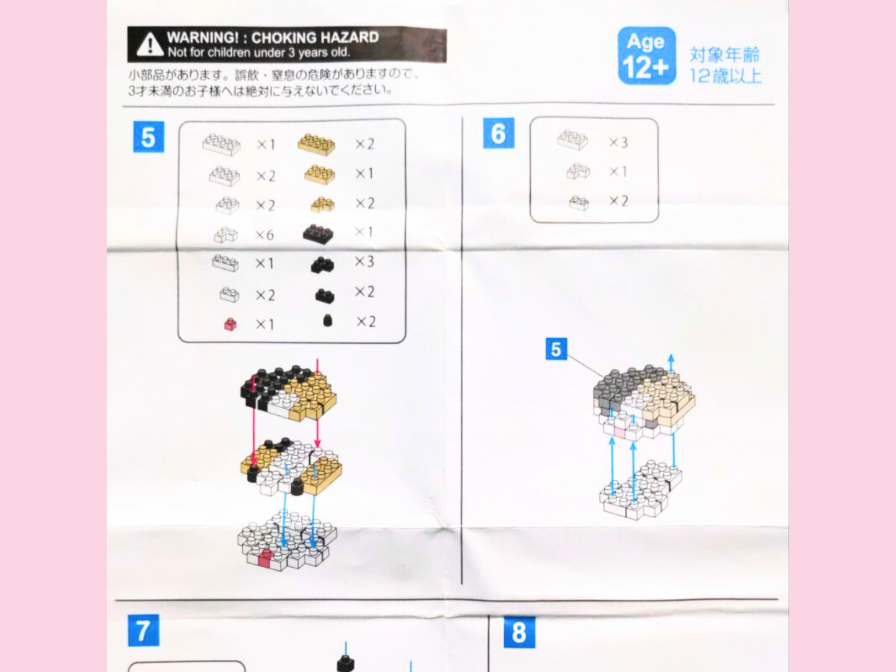
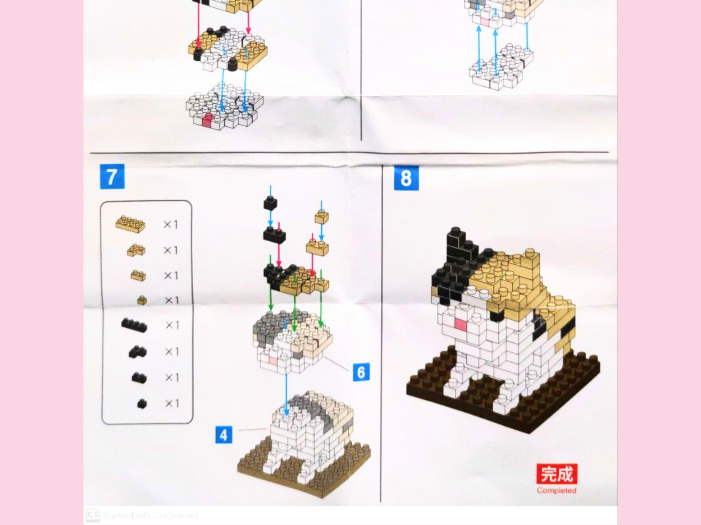

|  |
|
|
|
1
2
3
4
5
6
7
8
9
10
11
12
|
Friends of Dogs & Cats SeriesCalico CatApril 1st, 2024, 05:10 pm You guys!! I'm getting married!! Lol JK! April Fools! (Who is this joke for, really..?) ...Anyways, as a lover of all things feline, the moment I saw this Calico Cat model on the display box at my nearby DAISO store, I immediately put it in my cart and went straight to the cash register.
The Unboxing: Quality and First ImpressionsDaiso’s Petite Blocks have always impressed me with their compact, affordable kits, and this calico cat was no exception. The packaging was neat, and the blocks came in a clear plastic, there's the model base and an instruction manual. The instruction manual was compact yet detailed, perfect for builders at any experience level. The block quality has also remained consistent with what I’ve come to expect from this brand: sturdy with a satisfying snap-together design. Watch this relaxing timelapse video below to see me building it!
Instruction Manual




Difficulty: ⭐⭐Building the Calico CatThe building process began smoothly with the base, a straightforward section that gave me time to settle into the project. However, the complexity ramped up as I moved onto the cat’s face and its tail. One of my biggest challenges was building using the smallest block in the build, the 1x1 block. There's so many parts that needs the 1x1 that my fingers hurts a bit after building the model. In my builds, I like to add some personal twists. Instead of following the coat pattern exactly, I swapped a few of it's yellow and black blocks to give the calico a slightly more unique look. This is one of my favorite aspects of Daiso’s Petite Blocks—they encourage creativity. Don’t feel like you have to stick to the instructions 100%. Try mixing things up to make your model one-of-a-kind! This time around, the build was quite difficult despite it looking quite simple. Though I had to redo and detach some of the blocks again and again because I had done some mistep, I had quite a lot of fun! I felt a sense of satisfaction from finishing the build. So, I gave it a 2 out of 3 stars in difficulty! My Tips!1. Start with Sorting: Lay out your blocks by color and size before you begin. This simple step can save a ton of time. 2. Follow Sections: Focus on one part of the model at a time—such as the head, body, or tail—before combining them. This breaks the process into manageable steps. 3. Double-Check Alignments: One misaligned block can throw off the entire structure. Don’t be afraid to backtrack if needed—it’s part of the process!
Do you love building Petite Blocks as much as I do? I’d love to hear your thoughts, tips, and experiences! If you’ve tackled the Calico Cat model—or if you have requests or questions—reach out to me on X at @nikilikespuchiburokku. Let’s keep the Petite Block community growing, one tiny block at a time. . . . If you're in my area and you're interested in buying this model, here's a map to guide you!
|